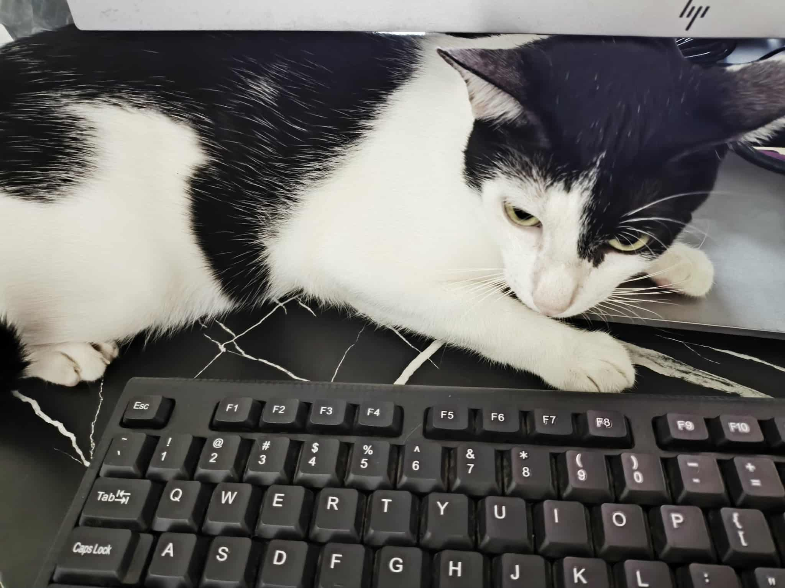

Beginning
September 28, 2025 - Sunday
This is an attempt to document my web development and programming journey. I bought a Udemy course by Appbrewery and it's my main guide right now. I'm currently 34 years old and I started learning full stack web development early 2024. I have a full time job and try to put in about 20-30 minutes per day to study.
I think I also need to learn again about writing so I can express my ideas. Design is also important so I think I would need to learn that too.
My goal right now is to create my own coded website for myaistories.net. I'm using Squarespace to host that website but will eventually code the website myself.
Aside from programming, I'm also learning Spanish and trying to improve my Japanese. I'm also playing Control and No Man's Sky. Sometimes it's challenging to do these things because there are other priorities. I hope to spend more time coding, learning languages, and being with my loved ones.
